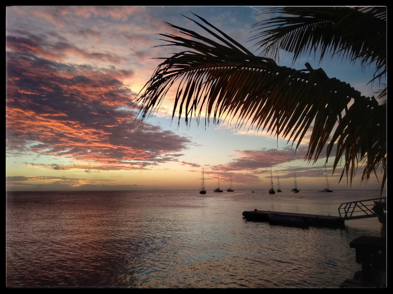
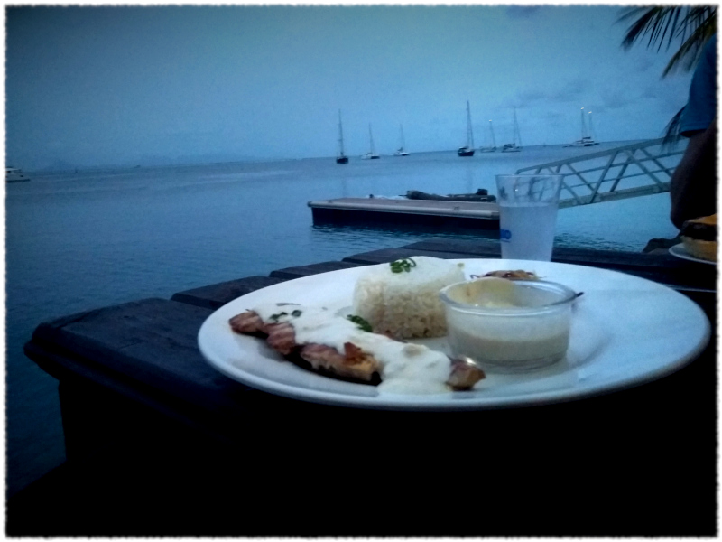
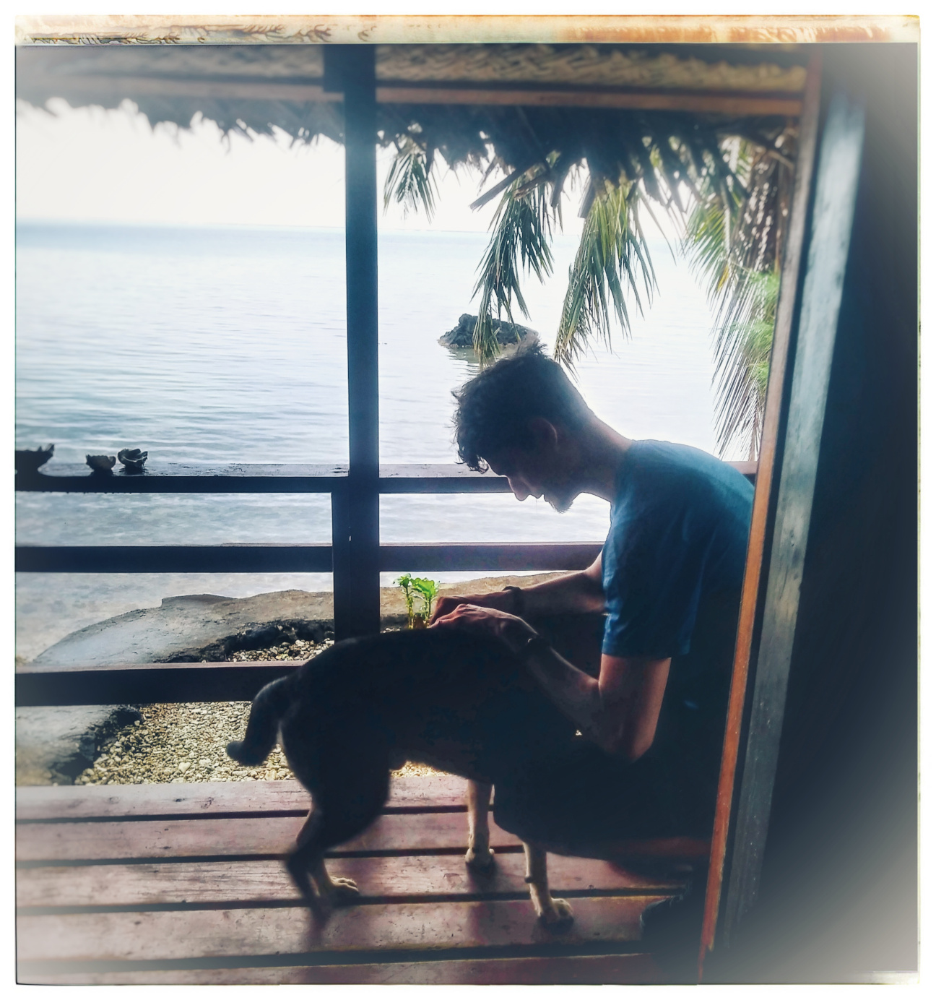

We are travelling around the islands of Polynesia.
Off The Grid and So Vanilla

"We grow vanilla. On Bora Bora, they grow hotels." And you know, fuck hotels. We found the most amazing, authentic, paradise island in Tahiti's own archipelago. Huahine. Only one supermarket, one cash machine, but a whole lot of everything Polynesian. Huahine specializes in vanilla farms. It means that they have their own signature dish - grilled fish with vanilla sauce and... wow. We didn't think the glory of Polynesian food can get even greater. But here we are.

Like Tahiti, Huahine is secretely two islands. The more settled Huahine Nui, and the wilder, more remote Huahine Iti. We started our exploration whith a few quiet days in Huahine Iti because we needed some recovery after all the adventures on Tahiti and Moorea. And it was spectacular. We were pretty much alone on this incredibly beautiful lagoon. In a bungalow that looked like a stunning lagoon grotto, decorated with sea shells and flowers. All for a fraction of a price we would pay for the same on Bora Bora, an island nearby with a lot more name recognition. The host, Caro, had several dogs (like pretty much anyone here) and one in particular, a sweet one-eyed older doggo became good friends with us. He would come hang out after he did his evening rounds to check security and cuddle up to us on the lagoon porch. As Brett would say, you kinda want to keep all the dogs here but it's not like we could give them a better life than they already have.
We biked around Huahine Iti, had our first taste of vanilla sauce and snorkeled, but pretty soon we grew tired of being cut off from all infrastructure. So we moved to Fare, the main town on Huahine Nui. The one with the cash machine and the supermarket. There we stayed for over 2 weeks, because it was too perfect to leave. So we got diving certificates and became staples at the local bar - Huahine Yacht Club. Contrary to the name, it's not pretentious at all, and has an chill vibe (like pretty much anything Polynesian). And yes, the top two photos on this page are taken from our favorite table at the Yaght Club. ;)
 Oh, also, Brett had a close ancounter with a baby shark in the shallows! :O
Oh, also, Brett had a close ancounter with a baby shark in the shallows! :O